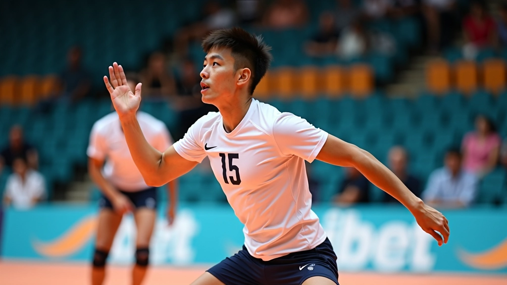
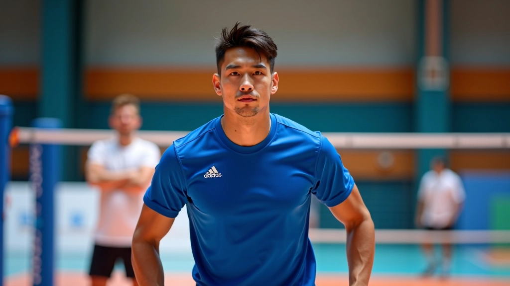
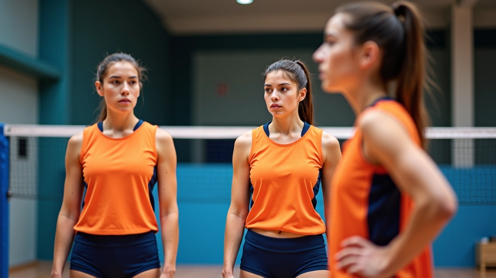
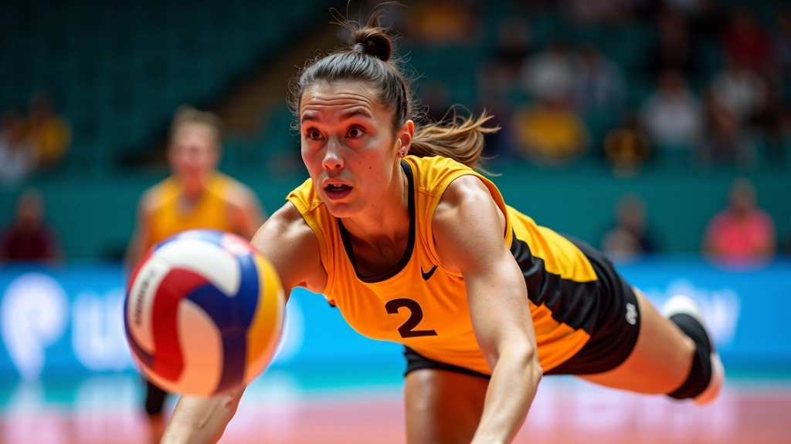

أساسيات الاستقبال السفلي الصحيح
تعلم المواضع الأساسية والحركات التي تشكل أساس كل استقبال فعال. نغطي وضع القدمين والذراعين والجسم.
الدفاع الجيد يبدأ قبل أن تُرمى الكرة. تعلم كيفية قراءة الهجوم والتنبؤ بحركات الخصم للاستعداد بشكل أفضل.


المؤلف
فريق تحريري متخصص
من إعداد فريق الأهلي فولي التحريري، المتخصص في شرح تقنيات الكرة الطائرة بطريقة واضحة وعملية.
قراءة اللعبة ليست مهارة سحرية — إنها مزيج من الملاحظة والخبرة والتركيز. عندما يُطلق الخصم الكرة، هناك علامات صغيرة تخبرك بأين ستذهب. زاوية الجسم، موضع القدمين، اتجاه النظر — كل هذا يعطيك أدلة قيّمة.
أفضل لاعبي الدفاع لا ينتظرون رؤية الكرة لتبدأ الحركة. هم يتحركون قبل ذلك بنصف ثانية. هذا الفارق البسيط بين الاستجابة السريعة والاستجابة المتأخرة يُحدث فرقاً كبيراً جداً في المباراة.
الدفاع الفعّال يبدأ بـ الموضع الصحيح والعينان على المهاجم، وليس على الكرة.
عندما يقترب المهاجم من الشبكة، انتبه للتفاصيل الصغيرة. موضع أقدامه يخبرك بالاتجاه الذي سيميل إليه جسده. إذا كان وزنه على الرجل اليسرى أكثر، فغالباً سيهاجم نحو اليمين. بسيط لكن فعّال.
الكتفان أيضاً مؤشر قوي جداً. إذا أدار المهاجم كتفيه نحو الجانب، فهو يُعد نفسه لضربة بزاوية. راقب حركة الذراع — الذراع العاملة تحكي القصة كاملة. هل هي مرفوعة عالياً؟ هل الكوع مثني؟ كل حركة تعني شيء مختلف.


موضعك أنت كمدافع مهم جداً. يجب أن تكون في المكان الصحيح في الوقت الصحيح. معظم لاعبي الدفاع الضعفاء يقفون في أماكن خاطئة لأنهم ينتظرون الكرة. الأفضل منهم يتحركون قبل الضربة مباشرة.
الخطوات الصغيرة السريعة هي السر. خطوتان أو ثلاث خطوات صغيرة جداً نحو الاتجاه الذي تتوقعه، وأنت الآن في موضع أفضل بكثير. هذا يعني أن الكرة ستكون أقرب إليك، وستكون لديك المزيد من الوقت للرد.
تذكر: لا تنتظر الكرة — تحرك نحوها. الفرق بين اللاعب الجيد والممتاز هو 0.5 ثانية من الحركة المبكرة.
مقالات أخرى قد تهمك
تعلم المواضع الأساسية والحركات التي تشكل أساس كل استقبال فعال. نغطي وضع القدمين والذراعين والجسم.

الإنقاذ البنكيكي من أصعب التقنيات لكنه يمكن أن ينقذ اللعبة. نشرح كيفية ممارستها بأمان وفعالية.

سلسلة من التمارين التي تحاكي ظروف المباراة الحقيقية. تركز على السرعة والدقة والثقة.
قراءة اللعبة مهارة يمكن تطويرها. لا تُولد بها — بل تتعلمها. كل مرة تلعب، حاول التركيز على تفاصيل جديدة. مرة اركز على أقدام المهاجم، مرة أخرى على الكتفين، ومرة ثالثة على نقطة الاتصال بين اليد والكرة.
مع الوقت، هذه التفاصيل ستصبح أوتوماتيكية. دماغك سيعالجها دون أن تضطر للتفكير فيها بوعي. هذا هو الهدف — جعل قراءة اللعبة حدساً وليس حساباً.
شاهد مباريات احترافية وركز على المدافعين الجيدين. كيف يتحركون؟ متى يبدآن الحركة؟ ما الذي ينظران إليه؟ التعلم من الآخرين أسرع بكثير من اكتشاف كل شيء بنفسك.


الاستجابة السريعة ليست عن السرعة البدنية وحدها. إنها عن السرعة العقلية أيضاً. يجب أن تقرر بسرعة: هل ستتحرك يميناً أم يساراً؟ هل ستقفز أم تبقى على الأرض؟ هل ستحاول الإنقاذ أم تترك الكرة للزميل؟
كل هذه القرارات تحتاج لأن تحدث في أقل من ثانية. وهذا يأتي من التدريب والخبرة. كلما لعبت أكثر، كلما أصبحت قراراتك أسرع وأدق. هذا هو الفرق بين لاعب مبتدئ ولاعب متقدم.
التدريب المتكرر يحول القرار من شيء واعٍ إلى حدس غريزي. كرر نفس الحركة 100 مرة، وستكون الـ 101 تلقائية.
قراءة اللعبة والاستجابة السريعة ليست موهبة فقط — إنها مهارة مكتسبة. ابدأ بملاحظة التفاصيل الصغيرة. تحرك قبل الضربة بنصف ثانية. دريب عينيك ودماغك على التركيز. كل مرة تلعب، ستصبح أفضل قليلاً.
لا تتوقع أن تصبح خبيراً في أسبوع واحد. لكن مع الوقت والتدريب المستمر، ستجد نفسك تقرأ اللعبة بطريقة لم تتخيلها من قبل. والأهم، ستشعر بثقة أكبر على الملعب.
هذا المقال معلومات تعليمية عن تقنيات الكرة الطائرة. الأساليب والنصائح المذكورة مبنية على ممارسات شائعة في الرياضة. يُنصح بالتدرب تحت إشراف مدرب متخصص لتجنب الإصابات والحصول على أفضل النتائج. كل رياضي له احتياجاته الفردية، والتدريب يجب أن يكون مخصصاً حسب المستوى والقدرات الشخصية.